| 日付 | 2019年3月10日（日） |
|---|---|
| 山域 | 阿武隈周辺 |
| メンバー | 家族（妻、長女・8歳、長男・5歳） |
| 山行形態 | 子連れ日帰り |
| アクセス | 車 |
| ルート (Map) | 三ツ石森林公園駐車場 (7:55) - (8:46) 雪入ふれあいの里公園 - (9:30) 金鉱山 - (10:19) 剣ヶ峰 (11:17) - (11:24) 雪入山 - (12:09) 浅間山 - (12:40) 三ツ石森林公園駐車場 |
今日は午後から天気が崩れる予報。
極力好天が長続きするよう東に向かうことにする。
いろいろ探していると、雪入山という山が見つかる。
今まで知らなかった山だが、手軽に登れそうな山なので
行ってみることにする。
三ツ石森林公園の駐車場に車を停める。標高180m。
雪入ふれあいの里公園の駐車場はホームページによると
9時開園らしいので、こちらの駐車場を利用する。
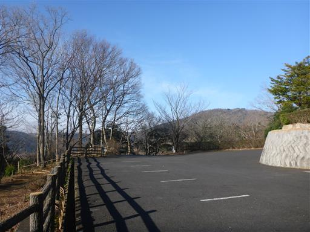
駐車場の側にある「もりの小屋」。
トイレは靴を脱ぐ必要があるのが少々不便。
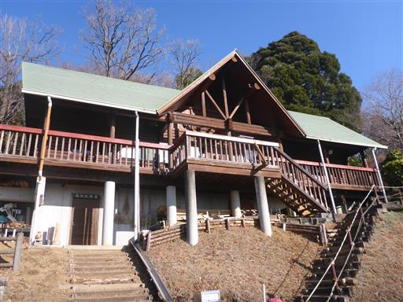
すでに車である程度標高を稼いでいるので展望が良い。
雲海や夜景も見ることができるらしい。
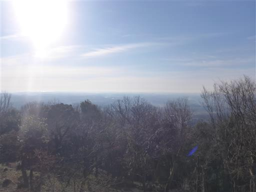
駐車場から下ったところにあるみかえりの滝。
滝と言っても水がチョロチョロと流れているだけ。
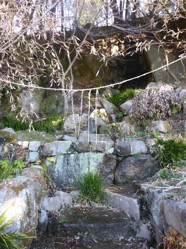
最初は登山口まで長い車道を歩いていく。
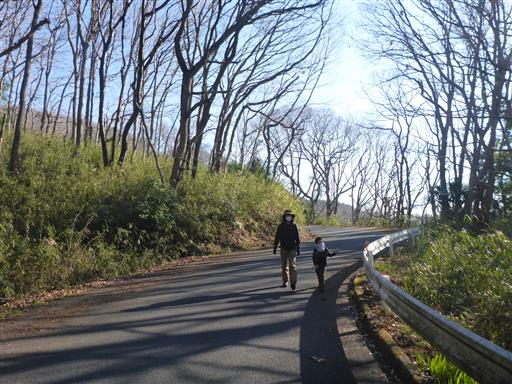
上空は青空。午前中は良い展望が期待できそうだ。
そして杉は花粉で見事に色付いている。
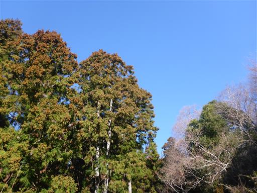
一本の木だけサクラの花が咲いている。
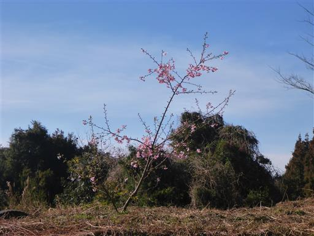
息子は棒を2本拾って、弓矢の形にして遊んでいる。
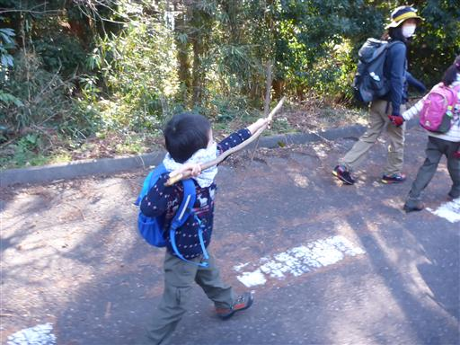
雪入池に到着。
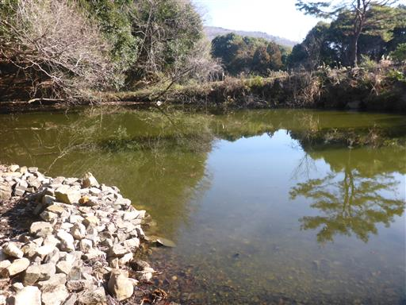
周回できるそうなので、一周ぐるっと周ってみることにする。
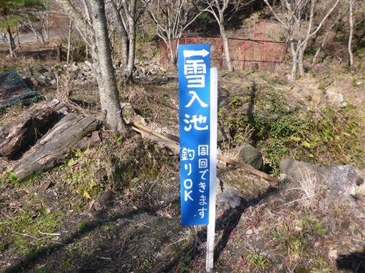
小さい池を一周するだけなのに、道は無駄に険しい。
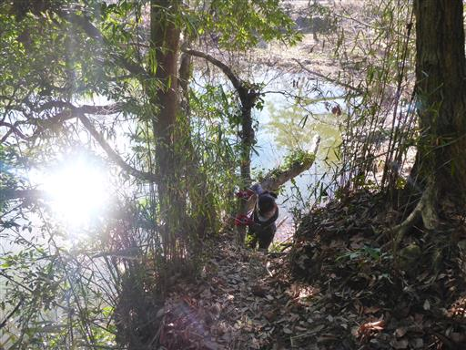
イノシシを捕まえるための巨大な罠。
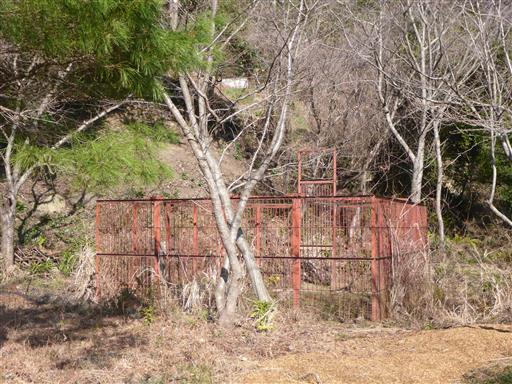
日時計。正しい時間を指している。
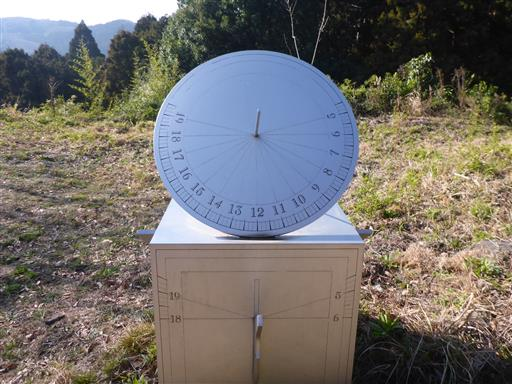
雪入ふれあいの里公園の駐車場に到着する。
まだ朝早いのでガラガラだ。
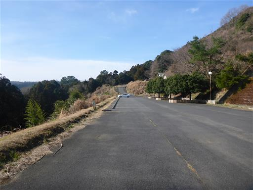
ホームページの情報と違って、8時から開いているようだ。
しかも閉まっている時は駐車場手前の空き地に停めて良いようだ。
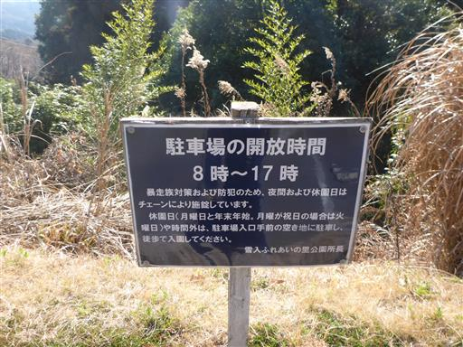
ここからようやく登山道が始まる。
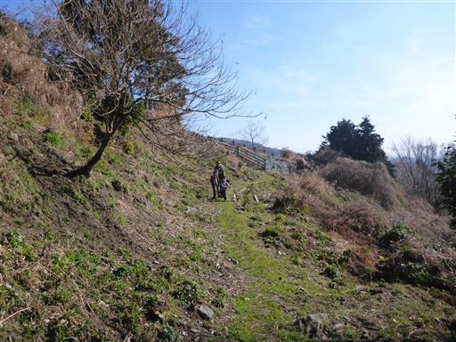
テントウムシを発見。
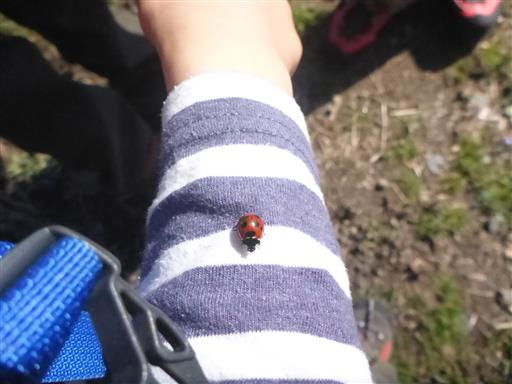
しばらく歩くと杉樹林帯に突入。息子の花粉症が心配だ。
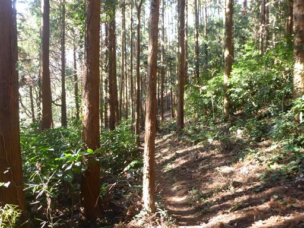
拾光寺観音。山の中にポツリと立つ観音像だ。

光が差して美しい照葉樹林帯の中を歩く。

この山は登山道が非常に多くかなり入り組んでいるが、標識が完備されている。
剣ヶ峰コースを登る予定だが、その前に金鉱山に寄り道することにする。
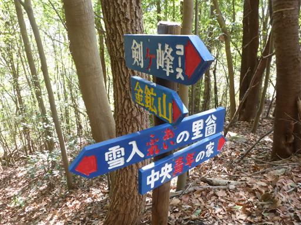
金鉱山への道はこれまでの道より少々細い。

第一金鉱山跡に到着。
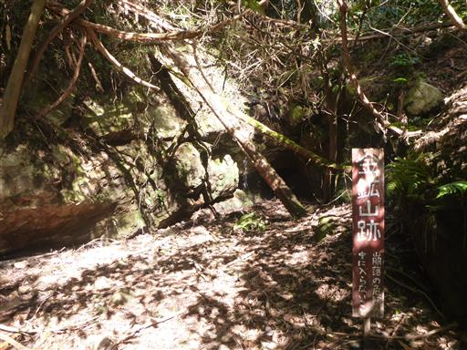
穴の中を覗いてみる。ヘッドライトで照らしてみるが中は真っ暗だ。
水浸しの小さい穴で、中に入る気にはならない。
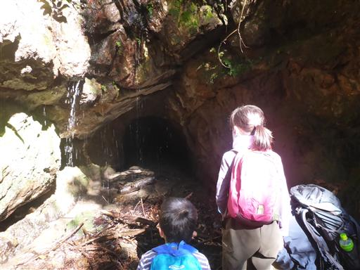
第二金鉱山跡に到着。
こちらはちょっと地面が削られているだけで、あまり鉱山という感じがしない。
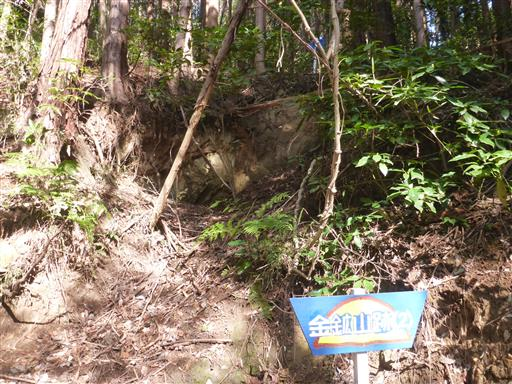
分岐点まで戻ったら剣ヶ峰コースに入っていく。
かなりの急斜面でロープが張られている。
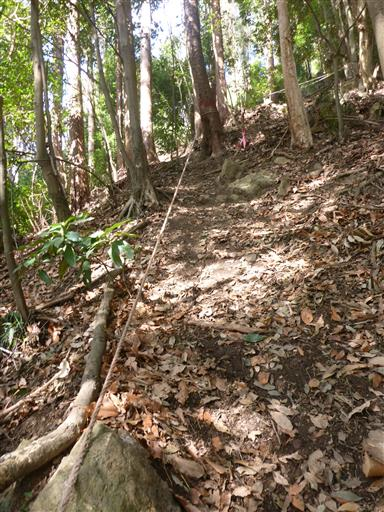
途中から岩場地帯になる。
急斜面よりこちらの方が歩きやすい。
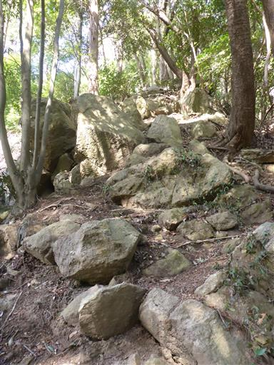
息子は岩場が好きなのでさっさと先に行ってしまう。
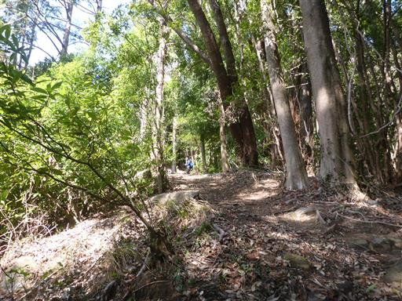
登山道は再びロープありの急斜面。
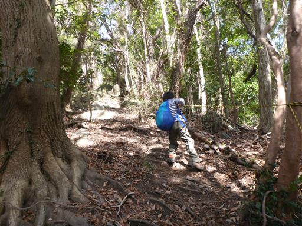
大きな岩を乗り越える。
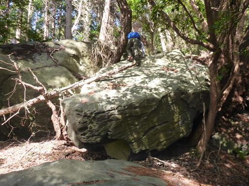
しばらく登ると植生が変わって笹薮地帯になる。
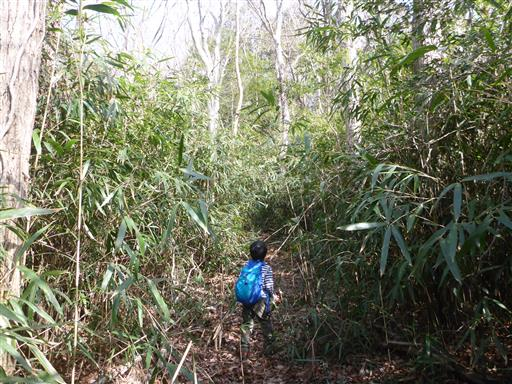
再び寄り道して観音岩を見学する。
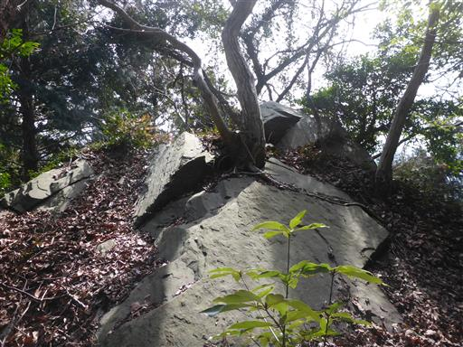
観音岩から下を覗く。かなりの高度感だ。
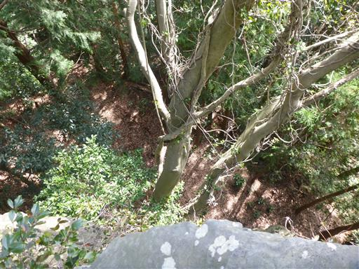
観音岩の下まで下りて見上げる。非常に立派な岩だ。
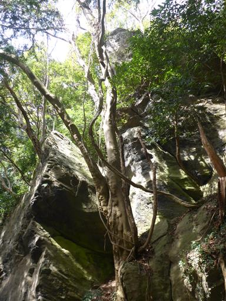
元のコースに戻ってしばらく歩くと傾斜が緩やかになる。
山頂はもうすぐだ。
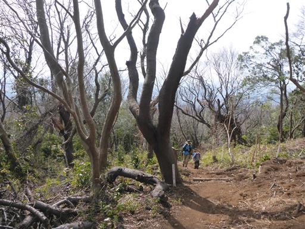
剣ヶ峰に到着。標高360m。
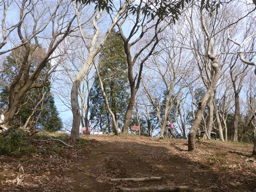
山頂からは南側の展望が広がる。遠くに霞ケ浦が見える。
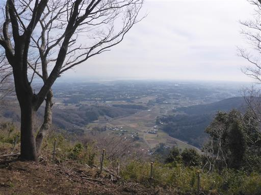
かすかに牛久大仏の姿も確認できる。
ベンチとテーブルがあるので、ここで昼食を取ることにする。
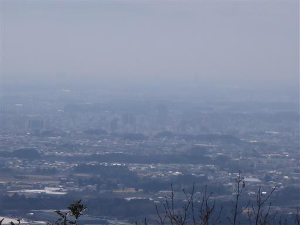
娘はテーブルの上にあった不思議な棒を見つけてご満悦。
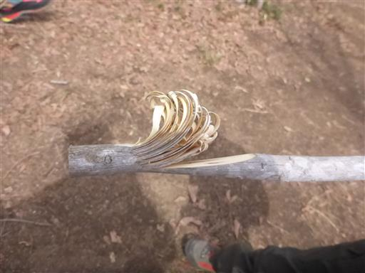
久々に持ってきた双眼鏡で周囲を観察。
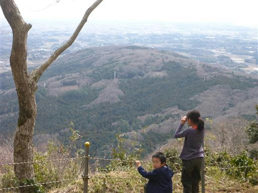
ここからしばらくはアップダウンの少ない緩やかな尾根道を歩く。
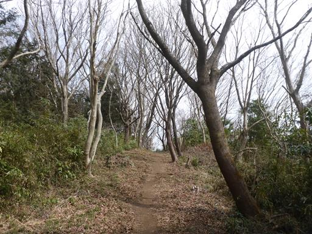
雪入山に到着。標高345m。
山頂っぽくない場所で、ここでは立ち止まらずにスルーする。
雪入山はこのピークを指すことも、この山域全体を指すこともある。
この山域ではパラボラ山が標高391mで最高峰なのだが、あまり登る人はいなさそうだ。
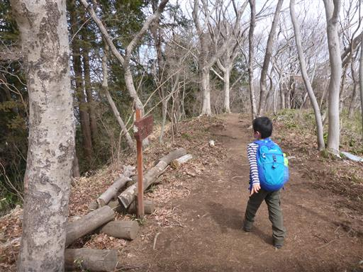
パラグライダー離陸場跡。ここからも展望が広がる。
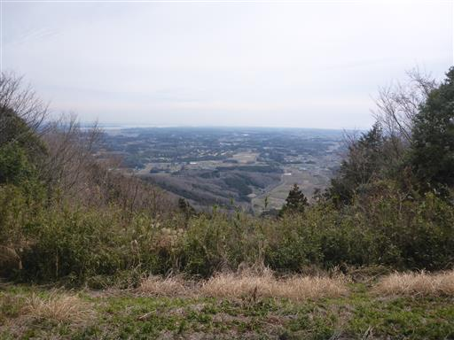
ところどころロープに囲まれた木がある。
食害から守るためだろうか？白い椿の花が咲いている。
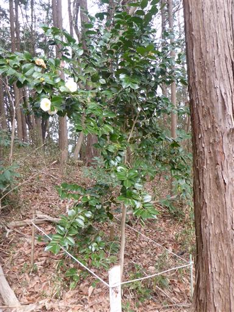
2種類の木が融合している。
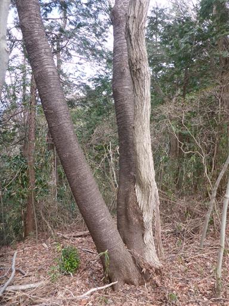
生存競争の跡。
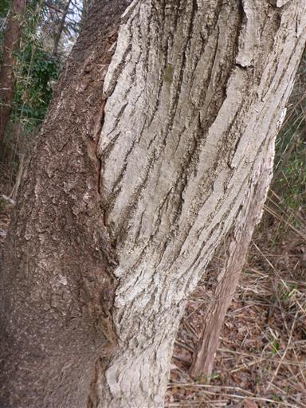
あきば峠を通過。ここは車道が通っている。
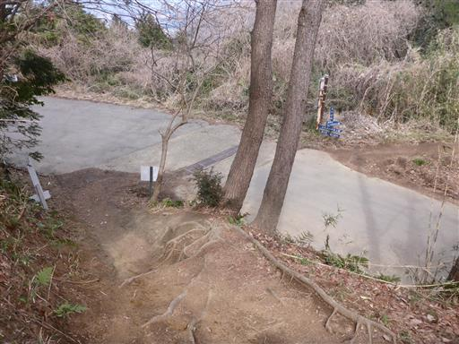
青木葉山に到着。先ほどの峠と同名で「あきばやま」と読むようだ。
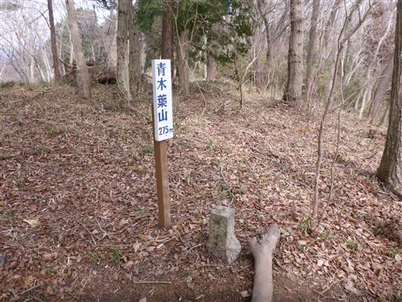
筑波山の展望台に到着。この角度から筑波山を見るのは初めてだ。
とんがった2つのピークが並んでいて格好良い。
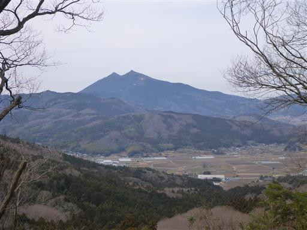
浅間山山頂に到着。標高345m。
本日最後のピーク。電波塔が建つ少々冴えないピークだ。
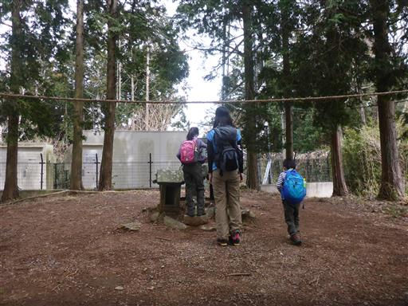
山頂には浅間神社の祠がある。
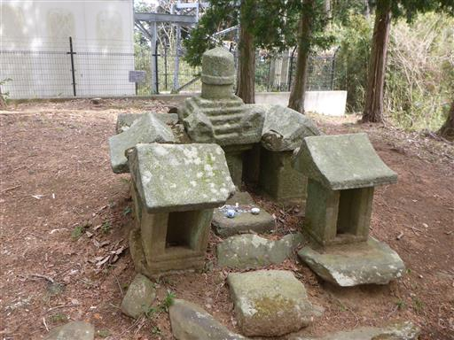
ここからは少しだけ展望が広がり、歩いてきた尾根が見渡せる。
薄らとした雲が空全体を覆いだす。
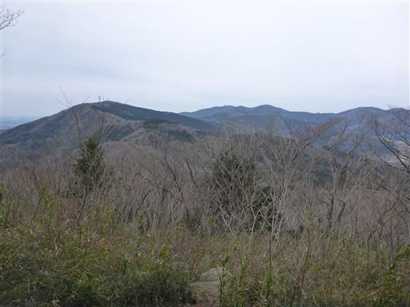
登りの道とは打って変わって、ゆったりとした尾根を下山する。
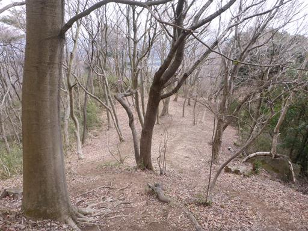
木の幹と見紛うような木の根。
岩の上から生えているので、土を探してここまで長く太くなったのだろう。
この辺りはキンランが見られるらしい。盗掘禁止の案内が出ている。
未だお目にかかったことのない花だ。
東屋。入れないようにロープが張られている。
確かに少々いびつな形で危険がありそうだ。
アスレチック広場と書かれていたので行ってみるが
ロープがだらりと垂れていて使えなさそうだ。
無事駐車場に戻ってくる。
来た時は車が無かったが、結構車が増えている。
「もりの小屋」の人に声をかけられ、お茶をいただく。
その後いろいろお話をし、カラスウリの実などをお土産にいただく。
短いながらも見どころがある楽しい山行だった。